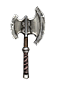

Filters:
Acheron's Touch
191 - 200 Damage
Speed: Average
+10% Physical Damage
99 - 123 Cold Damage
36 - 81 Vitality Damage
40% Slower Movement for 3.0 Seconds
15.0% Chance of 3.0 second(s) of Skill Disruption
47% Cold Resistance
100% Life Leech Resistance
LVL 47, STR 490, DEX 173
Adamantine Sickle of Kronos
500 - 550 Damage
Speed: Very Slow
900 Bleeding Damage over 30.0 Seconds
+100% Damage to Titans
Grants Skill : Ether Strike
LVL 80, STR 3000, INT 1000
Adranis
52 - 62 Damage
Speed: Average
20 - 68 Electrical Burn Damage over 4.0 Seconds
11% of Attack damage converted to Health
20% Slower Attack for 2.0 Seconds
+14 Strength
+21 Offensive Ability
+2 to Temporal Energy
LVL 22, STR 211, DEX 96
Age Axe
90 - 101 Damage
Speed: Average
20% Chance of:
180 Bleeding Damage over 3.0 Seconds
50 - 80 Bonus Damage
10.0% Chance of 2.0 second(s) of Stun
24% Pierce Resistance
+20 Strength
+20 Dexterity
+50 Defensive Ability
+15% Attack Speed
LVL 33, STR 319, DEX 126
Algor Mortis
252 Cold Damage
Speed: Slow
+100% Physical Damage
+150% Frostburn Damage with +50% Improved Duration
100% Vitality Damage Resistance
200 Frostburn Retaliation over 5.0 Seconds
+150% Frostburn Retaliation with +50% Improved Duration
15% Slowed Attack Retaliation for 5.0 Seconds
15% Slowed Movement Retaliation for 5.0 Seconds
200 Energy Reserved
-20% Total Speed
-40% Attack Speed
+40% Less Damage from Undead
LVL 66, STR 275, DEX 275, INT 450
Ancient Tartessian Rune Axe
66 - 76 Damage
Speed: Average
Difficulty : Normal
30% Fire Resistance
+200 Health
+150 Energy
LVL 28, STR 239, DEX 106
Ancient Tartessian Rune Axe
144 - 156 Damage
Speed: Average
Difficulty : Epic
60% Fire Resistance
+350 Health
+250 Energy
LVL 42, STR 401, DEX 154
Ancient Tartessian Rune Axe
229 - 239 Damage
Speed: Average
Difficulty : Legendary
90% Fire Resistance
+500 Health
+350 Energy
LVL 52, STR 509, DEX 186
Antediluvian Clam Axe
66 - 76 Damage
Speed: Fast
Difficulty : Normal
33 Electrical Burn Damage per Second
+0% Electrical Burn Damage with +33% Improved Duration
33 Poison Damage per Second
+0% Poison Damage with +33% Improved Duration
Bonus to All Pets :
20 Poison Damage per Second
+0% Poison Damage with +33% Improved Duration
LVL 28, STR 259, DEX 112
Antediluvian Clam Axe
144 - 156 Damage
Speed: Fast
Difficulty : Epic
66 Electrical Burn Damage per Second
+0% Electrical Burn Damage with +66% Improved Duration
66 Poison Damage per Second
+0% Poison Damage with +66% Improved Duration
Bonus to All Pets :
40 Poison Damage per Second
+0% Poison Damage with +66% Improved Duration
LVL 42, STR 421, DEX 160
Antediluvian Clam Axe
229 - 239 Damage
Speed: Fast
Difficulty : Legendary
100 Electrical Burn Damage per Second
+0% Electrical Burn Damage with +100% Improved Duration
100 Poison Damage per Second
+0% Poison Damage with +100% Improved Duration
Bonus to All Pets :
60 Poison Damage per Second
+0% Poison Damage with +100% Improved Duration
LVL 52, STR 529, DEX 192
Atropos' Assistant
157 - 165 Damage
15% Pierce Ratio
Speed: Average
120 Bleeding Damage over 3.0 Seconds
30 - 50 Cold Damage
12.0% Chance of 70% Reduction to Enemy's Health
40 - 60 Vitality Damage
100% Bleeding Resistance
100% Life Leech Resistance
+21 Strength
+20 Energy Regeneration
LVL 40, STR 396, DEX 147
Axe of King Budli
85 - 97 Damage
Speed: Average
33% Chance of:
160 Electrical Burn Damage over 4.0 Seconds
51-129 Energy Leech over 3.0 Seconds
80-130 Lightning Damage
3.0 second(s) of Skill Disruption
25 Pierce Damage
50% Lightning Resistance
25% Skill Disruption Protection
15% less Energy Reserved
+20% Attack Speed
+2 to Ire of Storms
+2 to School of Lightning
LVL 42, STR 300, DEX 124
Axe of Lesbos
87 - 95 Damage
Speed: Average
+40% Stun Duration
+10% Armor Protection
10% Physical Resistance
+19 Strength
+77 Health
+36 Defensive Ability
-6% Energy Cost
+50% Damage to Beastmen
+1 to Worldbuilder's Aura
+1 to Earthen Energy
Bonus to All Pets :
12 Damage
+10% Physical Damage
10% Physical Resistance
LVL 33, STR 319, DEX 126
Axe of Tereus

191 - 200 Damage
Speed: Average
+10% Physical Damage
+10% Elemental Damages
33 Bonus Damage
90 Elemental Damage
50% Slower Attack for 2.0 Seconds
6% Physical Resistance
+34 Strength
10% Offensive Ability
8% Chance to Dodge Attacks
+2 to Battle Momentum
LVL 48, STR 473, DEX 168
Axe of Visions

50 - 58 Damage
Speed: Average
26 Burn Damage over 3.0 Seconds
26 Poison Damage over 3.0 Seconds
+30 Offensive Ability
+2 to Eye of the Mind
Grants Skill : Mind-Reading
LVL 20, STR 204, DEX 94
Beastrend
50 - 58 Damage
Speed: Average
20.0% Chance of +50% Physical Damage
5% Physical Resistance
15% Bleeding Resistance
+20% Health Regeneration
+50% Damage to Beasts
+1 to all skills in Barbarism Mastery
LVL 21, STR 211, DEX 96
Bonehack
63 - 72 Damage
Speed: Average
+15% Physical Damage
10.0% Chance of 50 Bonus Damage
30% Reduced Offensive Ability for 3.0 Seconds
60 Reduced Armor for 3.0 Seconds
+30 Offensive Ability
+15% Attack Speed
LVL 30, STR 274, DEX 114
Brain Cleave
28 - 36 Damage
Speed: Average
10% Chance for one of the following:
4.0 second(s) of Confusion
4.0 second(s) of Skill Disruption
3 - 21 Lightning Damage
9 - 21% Energy Drain (50% of lost Energy as Damage)
+7 Dexterity
LVL 10, STR 127, DEX 72
Brigand's Axe

48 - 56 Damage
10% Pierce Ratio
Speed: Average
17% Pierce Resistance
+15% Attack Damage
6% Chance to Dodge Attacks
-7% Strength Requirement for all Weapons
+1 to all skills in Science Mastery
LVL 21, STR 96, DEX 188
Brokkr's Gift
162 - 173 Damage
10% Pierce Ratio
Speed: Average
80 Piercing Damage
40% Fire Resistance
+140 Offensive Ability
+30% Attack Speed
-20% Recharge
+20% Damage to Constructs
+20% Damage to Devices
+1 to all skills in Science Mastery
LVL 54, STR 469, DEX 174
Butcher's Bride
23 - 35 Damage
Speed: Average
+30% Physical Damage
21 - 36 Bleeding Damage over 3.0 Seconds
15% Reduced Damage for 1.0 Seconds
+6 Strength
+22 Health
LVL 7, STR 99, DEX 64
Cerberus' Bite

191 - 200 Damage
20% Pierce Ratio
Speed: Average
300 Bleeding Damage over 3.0 Seconds
15.0% Chance of +200% Bleeding Damage
70 Instant Poison Damage
7% of Attack damage converted to Health
+32 Strength
+1 to all Skills
Grants Skill: Charge
LVL 45, STR 473, DEX 168
Charybdis

200 - 211 Damage
Speed: Average
Set: Bane of Messina
150 - 300 Bleeding Damage over 3.0 Seconds
+30% Vitality Damage
72 Energy Leech over 3.0 Seconds
60% Slower Movement for 3.0 Seconds
+100 Offensive Ability
LVL 44, STR 473, DEX 168
Chi You's Siphon
54 - 63 Damage
Speed: Average
+35% Life Leech
15.0% Chance of 63 - 108 Energy Leech over 3.0 Seconds
8% of Attack damage converted to Health
+19 Strength
+52 Energy
Grants Skill: Life Drain
LVL 25, STR 239, DEX 104
Creeping Death
52 - 60 Damage
Speed: Average
96 - 120 Poison Damage over 3.0 Seconds
8.0% Chance of +100% Poison Damage
30% Poison Resistance
+25 Offensive Ability
+10% Attack Speed
+2 to Reaper's Avatar
LVL 25, STR 239, DEX 104
Crescent of Justice
213 - 221 Damage
25% Pierce Ratio
Speed: Fast
+20% Physical Damage
+30% Pierce Damage
10% of Attack damage converted to Health
10.0% Chance of 3.0 second(s) of Petrify
5.0% Chance of 50 - 70% Health Reduction Retaliation
+10% Health
+10% Offensive Ability
+1 to all skills in Lifegiving Mastery
Grants Skill: Final Verdict
LVL 50, STR 170, DEX 450
Cybele
121 - 149 Damage
Speed: Fast
+40% Physical Damage
30 Piercing Damage
+300 Health
+100 Offensive Ability
+30% Attack Speed
10% Chance to Dodge Attacks
10% Chance to Avoid Projectiles
+3 to Nature Familiarity
Grants Skill: Sanctuary
Bonus to All Pets :
8% Physical Resistance
+8.0 Health Regeneration per second
+8.0 Energy Regeneration per second
LVL 42, STR 413, DEX 152
Dvergr-Forged Battle Axe
83 - 95 Damage
Speed: Average
Difficulty : Normal
+10% Attack Speed
+30% Damage to Constructs
+30% Damage to Devices
+2 to School of Fire
Grants Skill : Magma Strike (Activated upon taking damage)
For a short time, your attacks are empowered with a fire boost.
5.0 Second Duration
19 Damage
17 - 20 Fire Damage
LVL 34, STR 293, DEX 122
Dvergr-Forged Battle Axe
159 - 170 Damage
Speed: Average
Difficulty : Epic
+15% Attack Speed
+30% Damage to Constructs
+30% Damage to Devices
+3 to School of Fire
Grants Skill : Magma Strike (Activated upon taking damage)
For a short time, your attacks are empowered with a fire boost.
5.0 Second Duration
36 Damage
32 - 40 Fire Damage
LVL 46, STR 442, DEX 166
Dvergr-Forged Battle Axe
234 - 246 Damage
Speed: Average
Difficulty : Legendary
+20% Attack Speed
+30% Damage to Constructs
+30% Damage to Devices
+4 to School of Fire
Grants Skill : Magma Strike (Activated upon taking damage)
For a short time, your attacks are empowered with a fire boost.
5.0 Second Duration
50 Damage
45 - 55 Fire Damage
LVL 56, STR 570, DEX 204
Echo Axe

31 - 38 Damage
Speed: Average
25.0% Chance of 69 Electrical Burn Damage over 3.0 Seconds
3 - 7 Bonus Damage
+20 Intelligence
+10.0 Health Regeneration per Second
+15% Attack Speed
+1 to Mend Wounds
+1 to Eye of the Mind
LVL 12, STR 124, DEX 72
Enkidu's Stand
172 - 184 Damage
Speed: Slow
+15% Physical Damage
+30% Fire Damage
90 - 123 Energy Leech over 3.0 Seconds
20.0% Chance of 220 Fire Damage
50% Fire Resistance
+25.0 Health Regeneration per second
+50% Attack Speed
+2 to Timeless Sorcery
LVL 40, STR 396, DEX 147
Erysichthon's Hunger
200 - 211 Damage
Speed: Average
+15% Physical Damage
350 Life Leech over 10.0 Seconds
+50% Life Leech
20% of Attack damage converted to Health
+155 Health
-8.0 Health Regeneration per second
+59 Defensive Ability
+25% Attack Speed
LVL 46, STR 473, DEX 168
Ferity

59 - 67 Damage
Speed: Average
72 Bleeding Damage over 3.0 Seconds
+30% Bleeding Damage
+30% Life Leech
30% Slower Attack for 3.0 Seconds
8% Pierce Resistance
12% Fire Resistance
+10% Movement Speed
Grants Skill : Moxie (Activated upon taking melee damage)
Blinded by rage in the heat of the battle, hit with increased power at the cost of lowered accuracy.
30.0 Second(s) Recharge
10.0 Second Duration
12 Damage
+20% Physical Damage
-75 Offensive Ability
+20% Attack Speed
LVL 25, STR 230, DEX 107
Fervor of Leucetius
155 - 167 Damage
Speed: Average
+20% Total Damage
+10% of Attack damage converted to Health
25% Poison Resistance
+10% Strength
+25% Attack Speed
Grants Skill: Onslaught
Bonus to All Pets :
+20% Total Damage
20% of Attack damage converted to Health
LVL 51, STR 455, DEX 170
Fleshreaver
96 - 102 Damage
Speed: Average
84 - 180 Bleeding Damage over 3.0 Seconds
+40% Life Leech
7% of Attack damage converted to Health
60 Reduced Armor for 3.0 Seconds
+39 Offensive Ability
LVL 32, STR 336, DEX 131
Force of the Svinfylkingars

164 - 185 Damage
Speed: Average
+20% Physical Damage
120 Reduced Armor for 3.0 Seconds
+10% Armor Protection
+200 Health
+10.0 Health Regeneration per second
Grants Skill : Empower
LVL 44, STR 336, DEX 219
Frostbite
27 - 37 Damage
Speed: Average
+8% Cold Damage
10% Chance of:
5 Frostburn Damage per Second
+8% Frostburn Damage
1.0 - 3.0 second(s) of Freeze
7 - 16 Cold Damage
12% Cold Resistance
LVL 11, STR 127, DEX 72
Gaian Splitter
66 - 76 Damage
Speed: Average
Difficulty : Normal
+15 Dexterity
+10% Offensive Ability
4% Chance to Avoid Projectiles
Bonus to All Pets:
-25% Recharge
LVL 28, STR 253, DEX 110
Gaian Splitter
144 - 156 Damage
Speed: Average
Difficulty : Epic
+30 Dexterity
+15% Offensive Ability
6% Chance to Avoid Projectiles
Bonus to All Pets:
-25% Recharge
LVL 42, STR 415, DEX 158
Gaian Splitter
229 - 239 Damage
Speed: Average
Difficulty : Legendary
+45 Dexterity
+20% Offensive Ability
8% Chance to Avoid Projectiles
Bonus to All Pets:
-25% Recharge
LVL 52, STR 523, DEX 190
Gaia's Revenge
176 - 184 Damage
20% Pierce Ratio
Speed: Average
+18% Pierce Damage
188 Bleeding Damage over 3.0 Seconds
+10% Total Damage
+18% Cold Damage
50 - 75 Cold Damage
12.0% Chance of 50% Reduced Damage for 3.0 Seconds
+30 Dexterity
+325 Health
+20% Damage to Titans
+20% Damage to Demons
LVL 43, STR 429, DEX 156
Golden Decapitator
241 - 253 Damage
Speed: Average
25.0% Chance of +100% Total Damage
10% Chance of:
30 Bleeding Damage over 3.0 Seconds
111% Reduction to Enemy's Health
1.0 second(s) of Stun
10% of Attack Damage converted to Health
+300 Offensive Ability
LVL 62, STR 577, DEX 206
Golden Guardian of Abydos

102 - 115 Damage
Speed: Average
+20% Physical Damage
+10% Elemental Damages
+10% Stun Duration
+10% Health
+10% Total Speed
+1 to Staggering Force
+1 to Primordial Force
Grants Skill : Solarstrike
LVL 34, STR 402, DEX 149
Goldfang Battle Axe
66 - 76 Damage
30% Pierce Ratio
Speed: Average
Difficulty : Normal
15 Piercing Damage
100 Reduced Armor for 1.0 Seconds
Grants Skill : Enrage (Activated upon casting a debuff)
Monsters don't take your attempts to lower their guard lightly, resulting in berserk fury.
20.0 Second(s) Recharge
8.0 Second Duration
8.0 Meter Radius
+15% Total Damage
+15% Total Speed
-15% Physical Resistance
-15% Pierce Resistance
-15% Elemental Resistance
LVL 28, STR 253, DEX 110
Goldfang Battle Axe
144 - 156 Damage
30% Pierce Ratio
Speed: Average
Difficulty : Epic
30 Piercing Damage
200 Reduced Armor for 1.0 Seconds
Grants Skill : Enrage (Activated upon casting a debuff)
Monsters don't take your attempts to lower their guard lightly, resulting in berserk fury.
20.0 Second(s) Recharge
8.0 Second Duration
8.0 Meter Radius
+15% Total Damage
+15% Total Speed
-20% Physical Resistance
-20% Pierce Resistance
-20% Elemental Resistance
LVL 42, STR 415, DEX 158
Goldfang Battle Axe
229 - 239 Damage
30% Pierce Ratio
Speed: Average
Difficulty : Legendary
45 Piercing Damage
300 Reduced Armor for 1.0 Seconds
Grants Skill : Enrage (Activated upon casting a debuff)
Monsters don't take your attempts to lower their guard lightly, resulting in berserk fury.
20.0 Second(s) Recharge
8.0 Second Duration
8.0 Meter Radius
+15% Total Damage
+15% Total Speed
-25% Physical Resistance
-25% Pierce Resistance
-25% Elemental Resistance
LVL 52, STR 523, DEX 190
Hair Splitter
25 Damage
Speed: Very Fast
+15% Physical Damage
25.0% Chance of 10 - 30% reduced Defensive Ability for 5.0 Seconds
LVL 5, STR 99, DEX 64
Havoc
54 - 63 Damage
Speed: Average
10.0% Chance of +90% Physical Damage
30% Chance of:
30 - 50% reduced Offensive Ability for 5.0 Seconds
30 - 50% reduced Defensive Ability for 5.0 Seconds
7 - 11 Bonus Damage
8.0% Chance of 2.0 second(s) of Stun
+23 Strength
LVL 25, STR 239, DEX 104
Head Hunter's Axe
50 - 57 Damage
Speed: Fast
Difficulty : Normal
10.0% Chance of +100% Physical Damage
+15% Stun Duration
6.0% Chance of 1.5 second(s) of Stun
+2 to Battle Momentum
LVL 20, STR 211, DEX 96
Head Hunter's Axe
121 - 131 Damage
Speed: Fast
Difficulty : Epic
10.0% Chance of +150% Physical Damage
+20% Stun Duration
8.0% Chance of 1.5 second(s) of Stun
+4 to Battle Momentum
LVL 40, STR 374, DEX 141
Head Hunter's Axe
206 - 220 Damage
Speed: Fast
Difficulty : Legendary
10.0% Chance of +200% Physical Damage
+25% Stun Duration
10.0% Chance of 1.5 second(s) of Stun
+6 to Battle Momentum
LVL 50, STR 484, DEX 171
Hecatomb
191 - 200 Damage
Speed: Average
25.0% Chance of 540 Bleeding Damage over 3.0 Seconds
10% Reduction to Enemy's Health
120 Vitality Damage
-15% Bleeding Resistance
90% Vitality Damage Resistance
+40 Strength
+2 to Demon's Gift
+2 to Obscure Crescent
Grants Skill : Slaughterhouse (Dual-wield Technique)
LVL 51, STR 457, DEX 164
Hiemal Decapitator
183 - 194 Damage
Speed: Average
52 - 72 Frostburn Damage per second
+20% Cold Damage
+20% Frostburn Damage
10% Chance of:
190 Bonus Damage
1.0 - 3.0 second(s) of Freeze
52 - 72 Cold Damage
15 - 25% Slowed for 1.0 Seconds
+24 Strength
+70 Offensive Ability
LVL 44, STR 429, DEX 156
Key of Elysium
183 - 194 Damage
Speed: Average
120 Energy Leech over 3.0 Seconds
+25 Strength
+25 Intelligence
+25 Dexterity
+350 Health
+2.0 Health Regeneration per second
+350 Energy
+20% Attack Speed
+1 to all Skills
Grants Skill : Ancestral Warrior (Activated on attack)
The ominous call on this ancient heirloom will summon forth ghostly heroes of old from the Elysian Fields to do battle once more.
6.0 Second(s) Recharge
Extra Life Time 24 Seconds
Ancestral Warrior Attributes:
Life Time 24.0 Seconds
3172 Health
900 Energy
Ancestral Warrior Abilities:
Basic Attack
138 - 184 Damage
LVL 44, STR 429, DEX 156
Key of Knowledge

180 - 192 Damage
Speed: Average
25% Chance of :
600 Electrical Burn Damage over 4.0 Seconds
15% Slowed for 4.0 Seconds
+20% Armor Protection
+400 Energy
+40% Casting Speed
10.0% Chance of -80% Recharge
+2 to all skills in Science Mastery
Bonus to All Pets:
+20% Total Speed
LVL 50, STR 455, DEX 170
Kinslay
30 - 37 Damage
Speed: Average
Difficulty : Normal
15 Bonus Damage
10% Slowed for 2.0 Seconds
+2 to Warlord's Challenge
LVL 8, STR 148, DEX 78
Kinslay
104 - 116 Damage
Speed: Average
Difficulty : Epic
35 Bonus Damage
15% Slowed for 2.0 Seconds
+4 to Warlord's Challenge
LVL 34, STR 341, DEX 132
Kinslay
176 - 189 Damage
Speed: Average
Difficulty : Legendary
60 Bonus Damage
20% Slowed for 2.0 Seconds
+6 to Warlord's Challenge
LVL 46, STR 457, DEX 164
Lypikouri
122 - 130 Damage
Speed: Average
15.0% Chance of 348 - 480 Bleeding Damage over 3.0 Seconds
60 - 78 Life Leech over 3.0 Seconds
+40% Life Leech
37% Fire Resistance
37% Lightning Resistance
+60 Health
+46 Offensive Ability
LVL 37, STR 374, DEX 141
Man-Feeder

236 - 248 Damage
Speed: Average
+30% Vitality Damage
+30% Vitality Decay
+30% Life Leech
10.0% Chance of 250% of Attack damage converted to Health
+60 Strength
+20% Health
+125 Offensive Ability
+100% Damage to Humans
+20% Less Damage from Humans
Grants Skill : Feast (Activated on attack)
Feast off your hopeless victims' flesh to regenerate health and inflict additional damage.
3.0 Second(s) Recharge
50 Energy Cost
4.0 Meter Radius
140 Life Leech over 3.0 Seconds
50 Piercing Damage
LVL 64, STR 615, DEX 192
Mantis Arm
54 - 62 Damage
Speed: Average
Difficulty : Normal
42 Life Leech over 3.0 Seconds
+10% Movement Speed
Grants Skill : Prey
LVL 20, STR 225, DEX 100
Mantis Arm
131 - 141 Damage
Speed: Average
Difficulty : Epic
84 Life Leech over 3.0 Seconds
+12% Movement Speed
Grants Skill : Prey
LVL 40, STR 385, DEX 144
Mantis Arm
222 - 238 Damage
Speed: Average
Difficulty : Legendary
120 Life Leech over 3.0 Seconds
+15% Movement Speed
Grants Skill : Prey
LVL 50, STR 495, DEX 174
Marauder's Bone Axe
50 - 57 Damage
Speed: Average
Difficulty : Normal
42 Bleeding Damage over 3.0 Seconds
23 - 32 Cold Damage
10.0% Chance of 40% Slowed for 2.0 Seconds
Grants Skill : Ice Shard (Activated on attack)
Projects a deadly shard of ice at the target inflicting cold damage and temporarily slowing them.
3 Energy Cost
1 Projectile(s)
40% Chance to pass through Enemies
33.0% Chance of 42 Bleeding Damage over 3.0 Seconds
23 - 32 Cold Damage
15% Slowed for 2.0 Seconds
LVL 20, STR 211, DEX 96
Marauder's Bone Axe
121 - 131 Damage
Speed: Average
Difficulty : Epic
81 Bleeding Damage over 3.0 Seconds
51 - 60 Cold Damage
10.0% Chance of 40% Slowed for 2.0 Seconds
Grants Skill : Ice Shard (Activated on attack)
Projects a deadly shard of ice at the target inflicting cold damage and temporarily slowing them.
6 Energy Cost
1 Projectile(s)
50% Chance to pass through Enemies
33.0% Chance of 81 Bleeding Damage over 3.0 Seconds
51 - 60 Cold Damage
20% Slowed for 2.0 Seconds
LVL 40, STR 374, DEX 141
Marauder's Bone Axe
206 - 220 Damage
Speed: Average
Difficulty : Legendary
114 Bleeding Damage over 3.0 Seconds
86 - 95 Cold Damage
10.0% Chance of 40% Slowed for 2.0 Seconds
Grants Skill : Ice Shard (Activated on attack)
Projects a deadly shard of ice at the target inflicting cold damage and temporarily slowing them.
9 Energy Cost
1 Projectile(s)
60% Chance to pass through Enemies
33.0% Chance of 114 Bleeding Damage over 3.0 Seconds
86 - 95 Cold Damage
25% Slowed for 2.0 Seconds
LVL 50, STR 484, DEX 171
Megalos
108 - 120 Damage
Speed: Average
25.0% Chance of +50% Total Damage
40 Elemental Damage
+29 Dexterity
+15% Offensive Ability
+33% Damage to Insectoids
LVL 33, STR 352, DEX 135
Mega-Strike

614 Damage
Speed: Average
+25% Physical Damage
210 Bleeding Damage over 3.0 Seconds
15.0% Chance of 99% Chance to Fumble attacks for 3.0 Seconds
50% Bleeding Resistance
50% Poison Resistance
50% Vitality Damage Resistance
-25% Slow Resistance
-80% Attack Speed
-40% Casting Speed
Grants Skill : Unearthly Strength
LVL 71, STR 1500, DEX 1
Mesos
87 - 95 Damage
Speed: Average
20.0% Chance of +50% Total Damage
28 Elemental Damage
+24 Dexterity
+10% Offensive Ability
+27% Damage to Insectoids
LVL 30, STR 319, DEX 126
Mikros
43 - 54 Damage
Speed: Fast
15.0% Chance of +50% Total Damage
16 Elemental Damage
+19 Dexterity
+5% Offensive Ability
+20% Damage to Insectoids
LVL 17, STR 183, DEX 88
Minoan Fire-Axe
104 - 113 Damage
Speed: Average
+20% Physical Damage
60.0% Chance of 117 - 258 Burn Damage over 3.0 Seconds
+20% Fire Damage
+20% Burn Damage
19 Fire Damage
30% Fire Resistance
27% Lightning Resistance
+10% Defensive Ability
+2 to Crystal Balls
+2 to Diamond Rage
LVL 38, STR 352, DEX 135
Mithon-El
213 - 221 Damage
Speed: Average
25% Elemental Resistance
-100% Offensive Ability
100% Absorption of Spell Energy
12% Chance to Dodge Attacks
+2 to all Skills
Grants Skill: Levy
LVL 47, STR 1, DEX 179, INT 500
Morte's Answer
237 - 248 Damage
Speed: Slow
25.0% Chance of +70% Physical Damage
210 Life Leech over 3.0 Seconds
6% Reduction to Enemy's Health
40% Vitality Damage Resistance
+80 Defensive Ability
+4 to Necromania
+1 to all skills in Necromancy Mastery
Bonus to All Pets :
50% Bleeding Resistance
50% Poison Resistance
50% Vitality Damage Resistance
50% Life Leech Resistance
LVL 49, STR 512, DEX 179
Myrmidon's Sting
66 - 76 Damage
Speed: Average
Difficulty : Normal
+18 Dexterity
+10% Attack Speed
+1 to all skills in Barbarism Mastery
LVL 28, STR 253, DEX 108
Myrmidon's Sting
144 - 156 Damage
Speed: Average
Difficulty : Epic
+24 Dexterity
+18% Attack Speed
+1 to all skills in Barbarism Mastery
LVL 42, STR 396, DEX 147
Myrmidon's Sting
229 - 239 Damage
Speed: Average
Difficulty : Legendary
+32 Dexterity
+26% Attack Speed
+2 to all skills in Barbarism Mastery
LVL 52, STR 506, DEX 177
Obsidian Crescent
36 - 45 Damage
Speed: Average
Set: Obsidian Armor
12 Vitality Damage
4% Physical Resistance
+25 Offensive Ability
+50% Damage to Beastmen
LVL 13, STR 155, DEX 80
Old Notch
76 - 87 Damage
Speed: Slow
+80% Physical Damage
10% Chance of:
150 - 210 Bleeding Damage over 3.0 Seconds
2.0 second(s) of Stun
100 Reduced Armor for 3.0 Seconds
+40 Strength
+200 Health
+100 Offensive Ability
-45% Attack Speed
+3 to Fissure
+1 to all skills in Geomancy Mastery
LVL 31, STR 267, DEX 112
Onager

122 - 130 Damage
Speed: Average
35% Chance of:
120 - 174 Vitality Decay over 3.0 Seconds
2.0 second(s) of Skill Disruption
100% Skill Disruption Protection
+400 Health
+22.0 Health Regeneration per second
+22.0 Energy Regeneration per second
+6% Total Speed
LVL 39, STR 374, DEX 141
Pangu's Axe
127 - 138 Damage
Speed: Average
+20% Lightning Damage
38 - 164 Lightning Damage
44% Lightning Resistance
70% Stun Resistance
+18 Strength
+18 Dexterity
+46 Offensive Ability
+1 to all skills in Time Mastery
+1 to all skills in Geomancy Mastery
LVL 39, STR 374, DEX 141
Persephone's Caress
210 - 222 Damage
Speed: Slow
+75% Cold Damage
+75% Frostburn Damage
7% Chance of one of the following:
2.0 - 3.0 second(s) of Stun
9.0 second(s) of Mind Control
70% Cold Resistance
50% Reduced Freeze Duration
+36 Dexterity
+110 Health
+40.0 Health Regeneration per second
5% Absorption of Spell Energy
LVL 48, STR 473, DEX 168
Phoenix
200 - 211 Damage
Speed: Average
84 - 288 Burn Damage over 3.0 Seconds
+50% Fire Damage
+50% Burn Damage
47 Fire Damage
70% Fire Resistance
+150 Health
+50% Health Regeneration
Grants Skill: Heat Shield
LVL 45, STR 473, DEX 168
Phonoi
66 - 76 Damage
Speed: Average
Difficulty : Normal
+40% Life Leech
7% of Attack damage converted to Health
LVL 28, STR 267, DEX 112
Phonoi
144 - 156 Damage
Speed: Average
Difficulty : Epic
+40% Life Leech
9% of Attack damage converted to Health
LVL 42, STR 407, DEX 150
Phonoi
229 - 239 Damage
Speed: Average
Difficulty : Legendary
+40% Life Leech
11% of Attack damage converted to Health
LVL 52, STR 512, DEX 179
Preeminent Od

142 - 162 Damage
Speed: Average
321 Burn Damage over 3.0 Seconds
+42% Fire Damage
321 Frostburn Damage over 3.0 Seconds
+42% Cold Damage
25% Elemental Resistance
+10% Intelligence
+10% Dexterity
+2 to Conjured Steel
+1 to all skills in Witchcraft Mastery
Grants Skill : Flow Control
LVL 58, STR 510, DEX 176
Pride of the Hive
120 - 137 Damage
Speed: Average
Difficulty : Epic
+20% Instant Poison Damage
+20% Poison Damage
20 Instant Poison Damage
+3 to Corrode
+3 to Steadfast Nature
LVL 46, STR 413, DEX 152
Pride of the Hive
190 - 210 Damage
Speed: Average
Difficulty : Legendary
+30% Instant Poison Damage
+30% Poison Damage
40 Instant Poison Damage
+5 to Corrode
+5 to Steadfast Nature
LVL 56, STR 523, DEX 182
Pyrophoric Lop
113 - 122 Damage
Speed: Average
180 Burn Damage over 3.0 Seconds
35% Fire Damage
15.0% Chance of +300% Burn Damage
42 Fire Damage
20 Reduced Resistances for 3.0 Seconds
25% Fire Resistance
180 Burn Retaliation over 3.0 Seconds
+24 Intelligence
+24 Dexterity
LVL 52, STR 528, DEX 183
Pytho
219 - 227 Damage
Speed: Average
270 Poison Damage over 3.0 Seconds
+35% Poison Damage
650 Vitalidy Decay over 10.0 Seconds
+35% Vitality Decay
9% of Attack damage converted to Health
10.0% Chance of 100% Chance to Fumble attacks for 3.0 Seconds
+200 Health
+500 Energy
+4.0 Energy Regeneration per second
LVL 52, STR 528, DEX 183
Raging Bull
36 - 45 Damage
Speed: Average
+25% Physical Damage
30.0% Chance of 1.0 - 4.0 second(s) of Stun
9% Pierce Resistance
+5% Strength
LVL 14, STR 155, DEX 80
Redfist Hatchet
66 - 76 Damage
Speed: Fast
Difficulty : Normal
15% Reduction in Bleeding Duration
30% Slow Resistance
Grants Skill : Battle Rage
Bonus to All Pets :
27 Damage
LVL 28, STR 246, DEX 108
Redfist Hatchet
144 - 156 Damage
Speed: Fast
Difficulty : Epic
20% Reduction in Bleeding Duration
40% Slow Resistance
Grants Skill : Battle Rage
Bonus to All Pets :
40 Damage
LVL 42, STR 408, DEX 156
Redfist Hatchet
229 - 239 Damage
Speed: Fast
Difficulty : Legendary
25% Reduction in Bleeding Duration
50% Slow Resistance
Grants Skill : Battle Rage
Bonus to All Pets :
60 Damage
LVL 52, STR 516, DEX 188
Reefguard's Symbol
30 Damage
Speed: Slow
Difficulty : Normal
+20% Poison Damage
+20% Less Damage to Plants
+20% Less Damage to Insectoids
+1 to all skills in Science Mastery
Bonus to All Pets :
45 Poison Damage over 3.0 Seconds
30 Lightning Damage
LVL 28, STR 1, DEX 110, INT 253
Reefguard's Symbol
60 Damage
Speed: Slow
Difficulty : Epic
+30% Poison Damage
+20% Less Damage to Plants
+20% Less Damage to Insectoids
+1 to all skills in Science Mastery
Bonus to All Pets :
75 Poison Damage over 3.0 Seconds
45 Lightning Damage
LVL 42, STR 1, DEX 158, INT 415
Reefguard's Symbol
100 Damage
Speed: Slow
Difficulty : Legendary
+40% Poison Damage
+20% Less Damage to Plants
+20% Less Damage to Insectoids
+2 to all skills in Science Mastery
Bonus to All Pets :
120 Poison Damage over 3.0 Seconds
60 Lightning Damage
LVL 52, STR 1, DEX 190, INT 523
Ritual Cleaver
225 - 236 Damage
Speed: Average
100 - 140 Elemental Damage
50 - 70 Vitality Damage
30% Elemental Resistance
30% Vitality Damage Resistance
+25% Attack Speed
+2 to Power Upsurge
+1 to all skills in Witchcraft Mastery
LVL 63, STR 577, DEX 206
Riveted Tomahawk
69 - 78 Damage
Speed: Average
30% Bleeding Resistance
30% Stun Resistance
30% Slow Resistance
+80 Offensive Ability
-40 Defensive Ability
+42% Attack Speed
+1 to all skills in Aqua Mastery
LVL 29, STR 102, DEX 248
Sagaris Cocytus
66 - 76 Damage
35% Pierce Ratio
Speed: Average
+15% Pierce Damage
15% Chance of:
102 Bleeding Damage over 3.0 Seconds
22 Reduced Resistances for 2.0 Seconds
+14 Strength
+18 Dexterity
LVL 29, STR 274, DEX 114
Sagaris Tartarus
219 - 227 Damage
Speed: Average
+25% Physical Damage
10.0% Chance of 250 Bonus Damage
60% reduced Offensive Ability for 3.0 Seconds
60 Reduced Armor for 3.0 Seconds
+90 Offensive Ability
+20% Attack Speed
Grants Skill: Obscure Crescent
LVL 50, STR 528, DEX 183
Scylla
191 - 200 Damage
Speed: Average
Set: Bane of Messina
+30% Bleeding Damage
147 Life Leech over 3.0 Seconds
50-100 Vitality Damage
60% Slower Attack for 3.0 Seconds
+100 Defensive Ability
LVL 44, STR 473, DEX 168
Shadowbane
113 - 122 Damage
Speed: Average
Set: Shadow Guard
+50% Vitality Damage
17% Reduction to Enemy's Health
-20% Reduction to all Requirements
+50% Damage to Demons
+1 to all skills in Necromancy Mastery
Bonus to All Pets :
+20% Pierce Damage
62 Piercing Damage
LVL 34, STR 363, DEX 138
Shai'tan
164 - 175 Damage
Speed: Average
80 - 100 Lightning Damage
7% of Attack damage converted to Health
40.0% Chance of 10 - 15% Energy Drain (100% of lost Energy as Damage)
52% Fire Resistance
52% Lightning Resistance
+24 Dexterity
+40% Energy Regeneration
+20% Casting Speed
-10% Recharge
LVL 40, STR 396, DEX 147
Silver Limbcutter

122 - 136 Damage
Speed: Average
10.0% Chance of 195 - 234 Bleeding Damage over 3.0 Seconds
10.0% Chance of 15 Reduced Resistances for 3.0 Seconds
40% Bleeding Resistance
60% Stun Resistance
60% Skill Disruption Protection
+1.0 Health Regeneration per second
+22% Attack Speed
+15% Damage to Humans
+15% Damage to Giants
+1 to Mutilating Edge
+1 to Blade Blaze
LVL 37, STR 358, DEX 137
Skullcleaver
41 - 50 Damage
Speed: Average
12 - 27 Bleeding Damage over 3.0 Seconds
+50% Bleeding Damage
11 - 14 Piercing Damage
50 Reduced Armor for 3.0 Seconds
LVL 17, STR 183, DEX 88
Snowblind
101 - 110 Damage
Speed: Average
+30% Cold Damage
+30% Frostburn Damage
10% Chance for one of the following:
4.0 second(s) of Freeze
7.0 second(s) of Confusion
34 - 46 Cold Damage
30% Slower Movement for 3.0 Seconds
34% Cold Resistance
50% Reduced Freeze Duration
Grants Skill : Flash Powder (Activated upon taking melee damage)
A magician's trick turned to more nefarious purposes, flash powder blinds adjacent enemies imapiring their ability to hit with weapons and potentially disorienting them.
15.0 Second(s) Recharge
59 Energy Cost
5.0 Meter Radius
40% Chance to Fumble attacks for 8.0 Seconds
40.0% Chance of 3.0 - 8.0 second(s) of Confusion
LVL 35, STR 336, DEX 131
Sorcerer's Fate
82 - 94 Damage
Speed: Average
30 - 60 Energy Leech over 3.0 Seconds
10% Reduction to Enemy's Health
22% Energy Drain (100% of lost Energy as Damage)
70% Chance of Impaired Aim for 2.0 Seconds
2.0 second(s) of Skill Disruption
25% Elemental Resistance
50% Reduced Freeze Duration
50% Reduced Petrify Duration
+20% Less Damage from Magical
+3 to Sever Minds
LVL 43, STR 293, DEX 122
Starkad's Wife
239 - 250 Damage
Speed: Average
+10% Physical Damage
20.0% Chance of 330 - 420 Bleeding Damage over 3.0 Seconds
40 Piercing Damage
+220 Offensive Ability
+20% Total Speed
+3 to Fleshrender
+3 to Battle Momentum
LVL 64, STR 563, DEX 202
The Furies
200 - 211 Damage
Speed: Average
+25% Vitality Damage
Chance of one of the following:
183 Bleeding Damage over 3.0 Secons
174 - 192 Poison Damage over 3.0 Seconds
60 - 70 Vitality Damage
10.0% Chance of 4.0 second(s) of Confusion
10.0% Chance of 50% Slowed for 3.0 Seconds
25% Elemental Resistance
+44 Strength
+135 Health
LVL 48, STR 490, DEX 173
The Monkey King's Greed
122 - 130 Damage
Speed: Average
50.0% Chance of:
99 - 234 Life Leech over 3.0 Seconds
+20% Life Leech
99 - 234 Energy Leech over 3.0 Seconds
+20% Energy Leech
25% Cold Resistance
32% Poison Resistance
+28 Dexterity
10% Chance to Dodge Attacks
LVL 38, STR 374, DEX 141
Theogenes' Onslaught
151 - 159 Damage
Speed: Fast
10.0% Chance of +50% Physical Damage
25 - 40 Bonus Damage
10% Physical Resistance
42% Pierce Resistance
50% Stun Resistance
50% Reduced Entrapment Duration
+56 Offensive Ability
+2 to Blade Blaze
Grants Skill: Combat Trance
LVL 40, STR 396, DEX 147
The Owl
89 - 100 Damage
15% Pierce Ratio
Speed: Average
45 Piercing Damage
+30% Intelligence
+20% Attack Speed
-15% Recharge
+2 to Conjured Steel
Grants Skill : Study Prey (Activated upon taking ranged damage)
By observing your prey from a distance you may discover
its weakness, resulting in greater pierce damage.
8.0 Second(s) Recharge
35 Energy Cost
8.0 Second Duration
6.0 Meter Radius
-30% Physical Resistance
-29% Pierce Resistance
LVL 41, STR 293, DEX 122
Thresher
34 - 43 Damage
Speed: Average
7% Pierce Resistance
7% Poison Resistance
+5% Strength
+5% Intelligence
+5% Dexterity
+5% Health
+5% Energy
+75% Damage to Plants
LVL 15, STR 155, DEX 80
Tiger Claw
50 - 57 Damage
Speed: Average
Difficulty : Normal
111 Bleeding Damage over 3.0 Seconds
5.0% Chance of +200% Bleeding Damage
+30 Offensive Ability
LVL 20, STR 218, DEX 98
Tiger Claw
121 - 131 Damage
Speed: Average
Difficulty : Epic
210 Bleeding Damage over 3.0 Seconds
8.0% Chance of +200% Bleeding Damage
+50 Offensive Ability
LVL 40, STR 374, DEX 141
Tiger Claw
206 - 220 Damage
Speed: Average
Difficulty : Legendary
300 Bleeding Damage over 3.0 Seconds
12.0% Chance of +200% Bleeding Damage
+50 Offensive Ability
LVL 50, STR 484, DEX 171
Torment
164 - 175 Damage
10% Pierce Ratio
Speed: Average
+30% Pierce Damage
+30% Vitality Damage
18-26 Piercing Damage
18-26 Vitality Damage
+20 Strength
+20 Intelligence
+20 Dexterity
+30% Attack Speed
-8% Reduction to all Requirements
+2 to Impaling Bones
+2 to Doom Sealing
LVL 42, STR 396, DEX 147
Tormentor

241 - 262 Damage
Speed: Average
165 - 210 Vitality Decay over 3.0 Seconds
10% Reduction to Enemy's Health
8% of Attack damage converted to Health
30% Vitality Damage Resistance
+3.0 Health Regeneration per second
+40% Casting Speed
+300 Damage to Humans
+2 to Everlasting Hatred
+2 to all skills in Chaos Mastery
LVL 60, STR 570, DEX 255
Trauma

172 - 192 Damage
Speed: Average
+10% Total Damage
48 - 108 Lightning Damage
5.0% Chance of 2.0 second(s) of Stun
+200 Health
+200 Energy
-10% Recharge
Bonus to All Pets:
+25% Lightning Damage
+25% Electrical Burn Damage
LVL 49, STR 451, DEX 162
Triton's Battleaxe
66 - 76 Damage
Speed: Average
Difficulty : Normal
90 Electrical Burn Damage over 3.0 Seconds
10% Energy Drain (150% of lost Energy as Damage)
1.0 second(s) of Skill Disruption
Grants Skill : Spell Breaker (Activated on attack)
A pulse of negatively charged energy dispels hostile enchantments on allies or, when cast on enemies, breaks their beneficial enchantments and negates a portion of their energy. This attack inflicts bonus damage when used against magical creatures.
6.0 Second(s) Recharge
32 Energy Cost
6.0 Meter Radius
10 Damage
24% Energy Drain
+50% Damage to Magical
LVL 28, STR 259, DEX 112
Triton's Battleaxe
144 - 156 Damage
Speed: Average
Difficulty : Epic
180 Electrical Burn Damage over 3.0 Seconds
15% Energy Drain (150% of lost Energy as Damage)
1.0 second(s) of Skill Disruption
Grants Skill : Spell Breaker (Activated on attack)
A pulse of negatively charged energy dispels hostile enchantments on allies or, when cast on enemies, breaks their beneficial enchantments and negates a portion of their energy. This attack inflicts bonus damage when used against magical creatures.
6.0 Second(s) Recharge
36 Energy Cost
6.0 Meter Radius
30 Damage
40% Energy Drain
+50% Damage to Magical
LVL 42, STR 421, DEX 160
Triton's Battleaxe
229 - 239 Damage
Speed: Average
Difficulty : Legendary
270 Electrical Burn Damage over 3.0 Seconds
20% Energy Drain (150% of lost Energy as Damage)
1.0 second(s) of Skill Disruption
Grants Skill : Spell Breaker (Activated on attack)
A pulse of negatively charged energy dispels hostile enchantments on allies or, when cast on enemies, breaks their beneficial enchantments and negates a portion of their energy. This attack inflicts bonus damage when used against magical creatures.
6.0 Second(s) Recharge
40 Energy Cost
6.0 Meter Radius
50 Damage
58% Energy Drain
+50% Damage to Magical
LVL 52, STR 529, DEX 192
Troll's Splitter
83 - 95 Damage
Speed: Average
Difficulty : Normal
50.0% Chance of 30 - 90 Bleeding Damage per second
30.0% Chance of 90 Reduced Armor for 3.0 Seconds
+30% Damage to Plants
+30% Damage to Insectoids
LVL 34, STR 280, DEX 118
Troll's Splitter
159 - 171 Damage
Speed: Average
Difficulty : Epic
50.0% Chance of 60 - 180 Bleeding Damage per second
30.0% Chance of 180 Reduced Armor for 3.0 Seconds
+30% Damage to Plants
+30% Damage to Insectoids
LVL 46, STR 428, DEX 162
Troll's Splitter
234 - 246 Damage
Speed: Average
Difficulty : Legendary
50.0% Chance of 90 - 270 Bleeding Damage per second
30.0% Chance of 270 Reduced Armor for 3.0 Seconds
+30% Damage to Plants
+30% Damage to Insectoids
LVL 56, STR 556, DEX 200
Victor of the Arena

127 - 138 Damage
Speed: Average
10.0% Chance of 35% Reduction to Enemy's Health
+25 Strength
+200 Health
+200 Energy
+15% Attack Speed
Grants Skill : Bravado
LVL 38, STR 347, DEX 134
Vitality Reaver
197 - 208 Damage
30% Pierce Ratio
Speed: Average
+20% Pierce Damage
15.0% Chance of 588 Bleeding Damage over 3.0 Seconds
+25% Bleeding Damage with +25% Improved Duration
12 Piercing Damage
8% of Attack damage converted to Health
25% Reduction in Bleeding Duration
25% Reduction in Life Leech Duration
+50 Dexterity
+50 Offensive Ability
+20% Attack Speed
+2 to Hemorrhage
+2 to Blood Harvest
LVL 49, STR 451, DEX 162
Wailing Horror
35 - 40 Damage
70 - 80 Vitality Damage
Speed: Fast
+50% Vitality Damage
75 Life Leech over 3.0 Seconds
33% Chance of:
75 Vitality Retaliation
75 Life Leech Retaliation over 3.0 Seconds
+2 to Horror
Grants Skill : Vision of Death (Activated on low health)
Assaults the minds of surrounding enemies with images of
their own death causing the weak-hearted to flee in horror and more resolut foes to fight less effectively.
14.0 Second(s) of Recharge
3.0 Meter Radius
18% Reduced Damage for 8.0 Seconds
66% Chance to Fumble attacks for 8.0 Seconds
66% Chance of Impaired Aim for 8.0 Seconds
8.1 second(s) of Fear
LVL 29, STR 1, DEX 112, INT 200
Wepwawet's Adze

109 - 116 Damage
Speed: Average
+18 Strength
+18 Dexterity
+50 Offensive Ability
+15% Total Speed
Grants Skill : Battlecraze (Activated on attack)
The axe proves to fit in your grip so well, it allows you to storm enemies with a volley of unstoppable hits.
10.0 Second(s) Recharge
2.5 Second Duration
+30% Attack Speed
LVL 32, STR 319, DEX 126
Whale Slicer
153 - 167 Damage
Speed: Slow
+20% Physical Damage
450 Bleeding Damage over 3.0 Seconds
25.0% Chance of +100% Bleeding Damage
5% Reduction to Enemy's Health
20% Reduced Damage for 3.0 Seconds
-10% Attack Speed
+3 to Hemorrhage
+3 to Blood Harvest
LVL 42, STR 413, DEX 152
Wrath of the Throng
245 - 305 Damage
Speed: Average
Set : Commander of the Throng
100 - 350 Lightning Damage
33% reduced Defensive Ability for 1.5 Seconds
+0% Slow Movement with +60% Improved Duration
+20% Increased Experience
+25% Damage to Beastmen
+25% Damage to Humans
+4 to Fissure
Grants Skill : Kinetic Blast (Activated on attack)
Slam the ground to unfurl a grand wave of pulverizing energy, killing multiple nearby enemies in a single second.
30.0 Second(s) Recharge
150 Energy Cost
9.0 Meter Radius
400 Damage
400 - 800 Lightning Damage
LVL 65, STR 556, DEX 191
Zaghnal
116 - 126 Damage
30% Pierce Ratio
Speed: Fast
147 Energy Leech over 3.0 Seconds
10 - 60 Lightning Damage
3 - 6% Energy Drain
27% Pierce Resistance
27% Cold Resistance
27% Poison Resistance
Grants Skill: Calculated Strike
LVL 37, STR 374, DEX 141